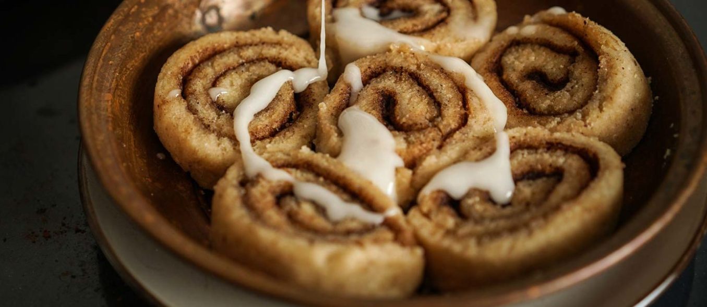

Cinnamon Rolls

Description
Amazing, fluffy, gluten, yeast, grain and soy free cinnamon rolls. No rising time!
Dry Ingredients
- 1 cup (112 g) almond flour
- 3 tablespoons coconut flour
- 2 tablespoons potato starch
- 2 tablespoons tapioca starch
- 1.5 teaspoons baking powder
- 1/4 teaspoons salt
- 1/2 teaspoons cinnamon
- 2 tablespoons sugar, fine or powdered
Wet Ingredients
- 1 tablespoon oil plus a spray for coating the dough
- 1/3 cup (78.86 ml) unsweetened plant-based milk such as almond or coconut
- A few drops of vanilla extract
- 1 teaspoon lemon juice
Cinnamon Filling
- 2.5 tablespoons sugar (coconut sugar, fine brown sugar, or fine cane sugar all work--or a mixture of them)
Steps
- Mix the dry ingredients in a bowl until well combined.
- Add the oil to the bowl. Mix lemon juice and vanilla into non dairy milk. Let sit for a few seconds then add to the bowl.
- Mix well to make a soft dough. Press and mix to combine. If too dry, then add 1-2 teaspoons more milk. (If the dough is a bit too sticky add potato starch and coconut flour 1 teaspoon at a time.)
- Press and shape the dough between 2 parchments into a square shape. (You don't need a rolling pin, just press with your palms to even it out.)
- Remove the top parchment. Lightly spray a little oil on the rolled out dough. Mix the cinnamon and sugar and sprinkle all over.
- Roll the dough from one end carefully using the parchment to roll it and reduce sticking to your hands. The first turn might break the dough which is ok - just stick it back. Slowly peel parchment away while rolling.
- Use a thread or floss to slice. The dough is soft so it might tend to break off. Handle delicately and transfer to a lightly greased stoneware dish. (6 inch or larger)
- Steam for 17 mins in a steamer or instant pot.
- Instant Pot: Add 1.5 cups water and start saute. Once the water gets hot, just about boiling, switch off saute. Place a trivet in the pot in the hot water. Place the cinnamon roll dish on the trivet. Close the lid. Now you can cook them 2 ways.
- Option 1: Press "Steam" on "low Pressure" with the vent on "Sealing", add time for 17 minutes. When the time is up, quick release.
- Option 2: Press "Steam" on high pressure, with the vent on "venting". The timer will not work, so use an external timer to count to 17 mins. Quick release.
- Carefully remove the dish. Cool for 5 mins, then add an icing of choice and serve.
- Simple icing: Add a few tsp of non dairy milk to 1/4 cup powdered sugar to make a thin icing. Thin icing with these rolls keeps the rolls moist.
Tips
- These rolls are best served fresh right out of the steamer, when they are at their fluffiest and freshest flavor.
- To store, refrigerate in a covered container for up to 3 days.
- Steaming: can be done in any regular steamer. You can also make one with any large saucepan which has a lid with a hole. Add water and bring to a boil. Then place the baking dish in the saucepan. Close the lid and continue to cook over medium heat for 17 mins. Switch off heat, remove lid and let cool for 2 mins before removing the rolls dish.
- Baking: These rolls have best texture when steamed. If you want to bake them, then cover the baking dish with a baking sheet or parchment and bake for 18 to 20 mins.